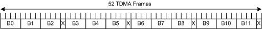

The R&S CMW provides a signal with a 52-multiframe structure as shown in the figure below. Each 52-multiframe contains 12 radio blocks (B0 to B11) with 4 consecutive frames each, 2 idle frames (X) and 2 frames usable for the packet timing advance control channel (X). All radio blocks in the signal are coded and modulated with the same coding and puncturing scheme.

This multiframe structure is important when measuring data rates. Only the radio blocks carry data and contribute to the data rate. Thus the data rate measured for a single radio block is higher than the average data rate of an entire multiframe.
At the very beginning of a measurement, the measured data rates fluctuate even for an ideal MS. While radio blocks B0 to B2 are measured, the data rate is higher than the theoretical maximum average value. Then the 13th frame is measured (not carrying data) and the data rate drops to the theoretical maximum. For B3 to B5, the data rate rises again and drops again for the 26th frame. This effect is relevant within the first seconds of a BLER measurement.
Assume a single slot with coding scheme MCS-9, two RLC data blocks per radio block and 592 bits per RLC data block (see also "Bits Per Radio Block / RLC Data Block").
A multiframe carries 12 radio blocks * 2 RLC data blocks / radio block * 592 bits / RLC data block = 14208 bits. The transmission of a multiframe requires 240 ms. Thus the theoretical average data rate for the multiframe is 14208 bits / 240 ms = 59.2 kbit/s.
The following table shows the measured average data rate for the first 12 radio blocks. The following formula is used:
<Data Rate> = <RLC data blocks> * 592 bits / (<Frames> * 240 ms / 52)